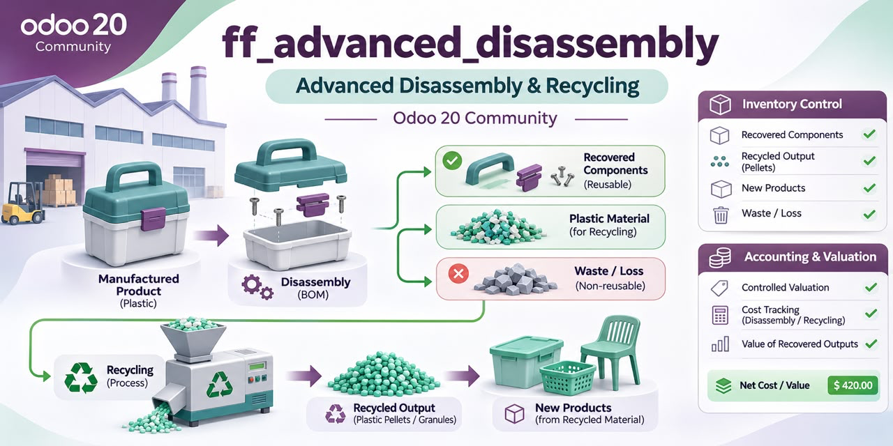

Inspect components, control recovered outputs, record partial disassembly, and keep stock valuation traceable through native Odoo records.
Flous Flow Advanced Disassembly extends Manufacturing Unbuild without changing the standard Odoo flow when advanced mode is disabled.
Draft → Inspection → Ready → Executing → Done. Operators review the automatically loaded component lines, set actual outputs and destinations, validate the inspection, and execute the operation. Administrators can reverse a completed operation through linked reversing stock moves and journal entries; posted history is not edited in place.
The source carrying value is captured from Odoo stock valuation. The operator enters one output cost value for the operation, and the remaining source value becomes the expected valuation difference.
The optional company-level disassembly valuation-difference account overrides the source product category's Stock Variation Account. If no override is configured, standard category accounting remains the default.
The module exposes a dedicated Advanced Disassembly permission scope in the standard Odoo 20 Users form: User, Cost Viewer, and Administrator. Each role implies only the native Manufacturing capability it needs, while native Manufacturing or Accounting roles alone do not grant this module.
Requires Odoo 20.0 Community with mrp, stock_account, and mail. There are no Enterprise dependencies. Clone the dedicated repository on the 20.0 branch, add it to --addons-path, update the Apps list, and install ff_advanced_disassembly.
التفكيك المتقدم يضيف فحصًا واضحًا للمكونات، التحكم في الكميات والمخرجات، وجهات التخزين، التفكيك الجزئي، وحركة تقييم محاسبية قابلة للمراجعة.
The repository includes Arabic translations, access controls, upgrade documentation, automated tests for stock and valuation flows, and a focused user guide. Customer-specific charts of accounts, localization behavior, production load, physical warehouse execution, and marketplace approval must still be validated in staging.